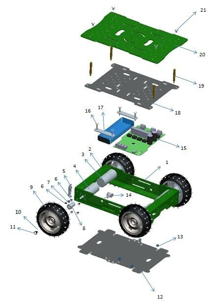

4WD Hercules Mobile Robotic Platform adheres to the spirit with strong power and complete function, and it is a companion for you to enter into the robot world where you can make your own robot mobile platform. Hercules, the Titan in Greek mythology, is widely known for his strength and spirit of adventure.
It consists of the component of Hercules motor controller, Hercules skeleton, gear motor etc. The Hercules motor controller can consistently support the current up to 15A and driving voltage in the range of 6V-20V, thus, it can supply strong motive power to the whole platform. The Hercules skeleton is made up of aluminium alloy plate with firm but pliable texture which can carry, display and connect sorts of accessories in your project. Its 4 powerful gear motors, especially a couple of them from Seeed’s original encipheror can monitor the running speed of your platform and amend the process parameter by the shaped closed-loop control. This provides a possibility to control precise process. Besides, other accessories such as wheels, cooper cylinder and acrylic guard plate that make the platform to be a completely mobile platform.
Hercules is a suite of open-platform. It is convenient for users to install all kinds of components through the hole sites on the board. In addition, the Grove connector reserved on the board can help the inventor input several sorts of sensor data into system. What’s more, Hercules controller is Arduino compatible, so you can freely alter the device drives and programs.


| Parts Name | Specification | Material | Quantity | |
|---|---|---|---|---|
| 1 | Bracket-1 | 200*35*20mm*3.0mm | L Aluminum extrusion 6061 | 2 pcs |
| 2 | Bracket-2 | 135*35*20mm*3.0mm | L Aluminum extrusion 6061 | 2 pcs |
| 3 | Reducing-Motor | 25GA-370 | 310rpm DC6V stalling torque：70kg | 2 pcs |
| 4 | Reducing-Motor with encoder | 25GA-370 | 310rpm DC6V stalling torque：≥7.0 Kg.cm | 2 pcs |
| 5 | Bracket Adapter Plate | 29*12*2.0mm | cold rolled plate | 4 pcs |
| 6 | Screw | 3*10mm | Metal | 30 pcs |
| 7 | nut | M3*2.5mm | Metal | 4 pcs |
| 8 | Motor-connector | Ф4mm*W12mm*L18mm | Metal | 4 pcs |
| 9 | Wheel | Ф85mm*W31mm | plastic+rubber | 4 pcs |
| 10 | Spring Shim | Ф7mm*Ф4mm | Metal | 4 pcs |
| 11 | Screw | M4*8mm | Metal | 4 pcs |
| 12 | Under-plate | 199*129*2.0mm | Tea black Acrylic | 1 pcs |
| 13 | washer | Ф5.0*Ф3*5mm | PA | 4 pcs |
| 14 | power swicth | / | / | 1 pcs |
| 15 | Hercules Dual 15A 6-20V Motor Controller | 1 pcs | ||
| 16 | Screw | M3*21mm | Metal | 4 pcs |
| 17 | Acylic-plate | 53*12*2.0mm | Transparent Acrylic | 2 pcs |
| 18 | cover-plate | 184*132*2.0mm | Tea black Acrylic | 1 pcs |
| 19 | Cu pillar | M3*30mm-6mm | signal stud | 4 pcs |
| 20 | Top-plate | 216*138*1.5mm | AL plat | 1 pcs |
| 21 | Screw | M3*21mm | Metal | 4 pcs |
| 22 | Screw-driver | M3-85mm | / | 1 pcs |
| 23 | Screw-driver | 2.5-53mm | / | 1 pcs |
| 24 | Power cable | 150mm | / | 1 pcs |
| 25 | wire | 160mm | / | 1 pcs |
Note:
| Item | Parameter | |
|---|---|---|
| Working Voltage | 4.0-7.0 DCV | |
| Rotation | CCW | |
| No Load | Current | 280mA |
| Speed | 310±12% r/min | |
| Load | Current | 1600mA(max) |
| Speed | 260±12% rpm | |
| Rotation | CCW | |
| Startup Voltage | ≤1.2V | |
| Load Torque | 1500.0 g.cm | |
| stalling torque | ≥7.0 Kg.cm | |
| Stalling Current | ≤9.0A | |
Firuge:
About the usage of the kit, please click here.
Here is a video, Showing the hercules strong: http://www.youtube.com/watch?v=uc4-Dqgwrq8.
4WD Robot Controller Eagle File
Specification for Motor